Proiectarea unei intervenții de promovare a sănătății
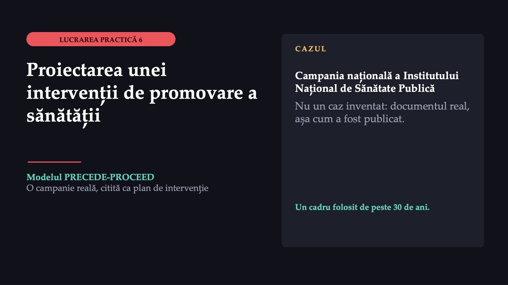
1 / 30Pe 2 noiembrie 2026, Institutul Național de Sănătate Publică a anunțat o campanie națională pentru sănătatea reproducerii, adresată în primul rând adolescenților și tinerilor. Lucrarea nu inventează un caz: cazul este campania însăși. O citim ca pe planul unei intervenții, cu un cadru folosit de peste 30 de ani.
Ce spune pagina campaniei
![ACTUL 1 · PAGINA CAMPANIEI Ce spune pagina campaniei Două obiective Informare și decizii responsabile; conștientizare privind accesul echitabil la informații și servicii. Patru grupuri-țintă Adolescenții și tinerii; femeile din grupuri vulnerabile; populația generală; profesioniștii din sănătate. Șase recomandări Surse medicale de încredere; metodă contraceptivă eficientă; prezervativ; vaccinarea HPV; testare; consiliere și planificare familială. 26,6% liceeni cu relații sexuale (YRBSS) 9,1% născuți din mame sub 20 de ani (INS, 2025) 574 cazuri de sifilis în 2024](diapozitive/LP06/002.jpg) 2 / 30
2 / 30În noiembrie și decembrie 2026, Institutul Național de Sănătate Publică desfășoară o campanie națională despre sănătatea reproducerii, împreună cu direcțiile de sănătate publică. Pagina enunță două obiective și patru grupuri-țintă, iar recomandările Institutului sunt șase. Pagina se sprijină pe trei serii de date: prima, din studiul comportamentelor de risc ale adolescenților, spune că relații sexuale cel puțin o dată au avut 26,6% dintre liceeni; a doua arată că în 2025, 13 224 dintre cei 145 725 de copii născuți vii, adică 9,1%, au avut mame sub 20 de ani; a treia, că în 2024 au fost raportate 574 de cazuri de sifilis.
Ce încearcă să schimbe fiecare material
![ACTUL 1 · CELE NOUĂ MATERIALE Ce încearcă să schimbe fiecare material Infograficul „Sarcina la adolescente” cifre și măsuri pe trei niveluri Broșura despre contracepție demontează mituri Broșura pentru părinți zece sfaturi Pliantul „Tu decizi!” replici exersate Afișul despre abstinență „3 din 4 adolescenți nu și-au început viața sexuală în liceu”; „Atenție la alcool…” Afișul despre drepturi informare, consimțământ Afișul despre infecții cifre și prevenire Afișul despre metode contraceptive nouă metode Afișul despre vaccinarea HPV gratuitate, compensare Pagina campaniei INSP, 2 noiembrie 2026.](diapozitive/LP06/003.jpg) 3 / 30
3 / 30La sfârșitul paginii stau nouă materiale descărcabile. Fiecare își declară publicul: unele sunt adresate adolescenților, broșura despre contracepție tinerilor, iar materialele despre infecții, metode contraceptive și vaccinarea anti-HPV populației generale și profesioniștilor din domeniul sănătății. Le grupăm după ce încearcă să schimbe. Afișul despre abstinență spune că „3 din 4 adolescenți nu și-au început viața sexuală în liceu” și avertizează: „Atenție la alcool, droguri și presiunea socială”.
Observați ce nu există pe pagină
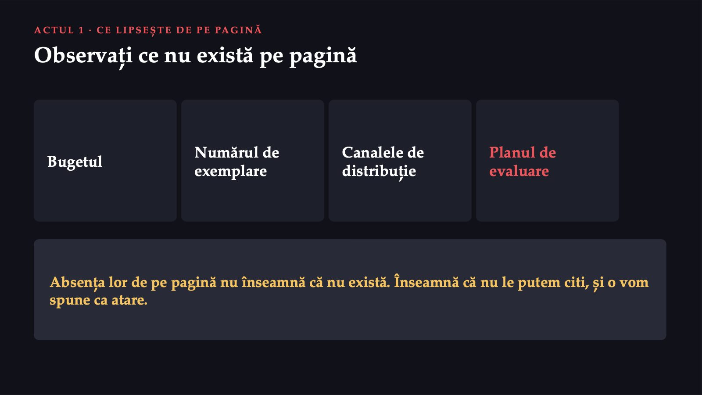
4 / 30Observați ce nu există pe pagină: nici bugetul, nici numărul de exemplare, nici canalele prin care materialele ajung la adolescenți, nici un plan de evaluare. Absența lor de pe pagină nu înseamnă că nu există. Înseamnă că nu le putem citi și că o vom spune ca atare.
Care material ar schimba cel mai mult comportamentul adolescenților?
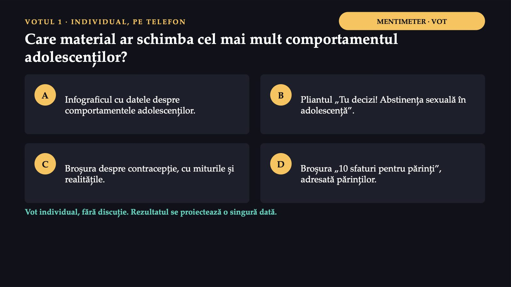
5 / 30Întrebarea, votată individual, fără discuție: care dintre aceste materiale credeți că ar schimba cel mai mult comportamentul adolescenților? Rezultatul se proiectează o singură dată; discuția vine după prezentarea modelului.
De unde vine și ce spune
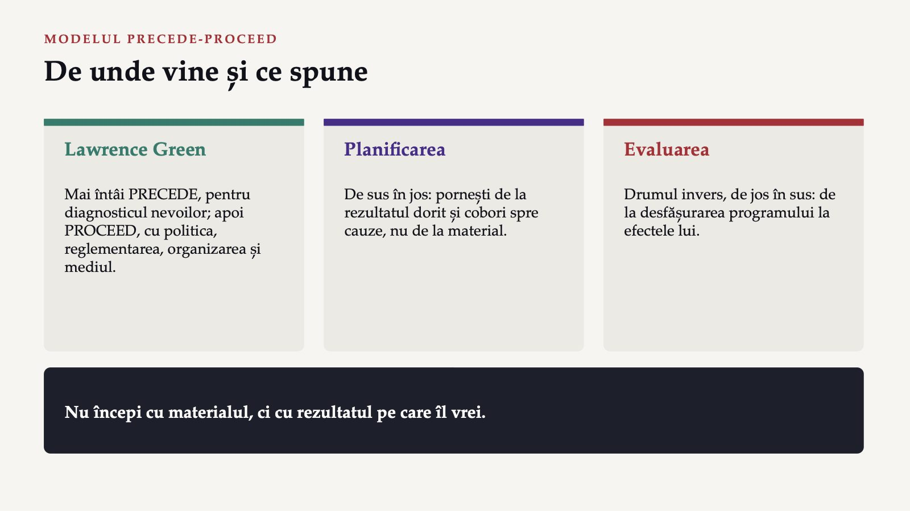
6 / 30Modelul a fost construit de Lawrence Green: întâi partea PRECEDE, pentru diagnosticul nevoilor de sănătate și de educație, apoi partea PROCEED, care a adăugat politica, reglementarea, organizarea și mediul. Ideea centrală: nu începi cu materialul, ci cu rezultatul pe care îl vrei, și cobori spre cauze. Evaluarea parcurge drumul invers, de jos în sus.
Cinci evaluări, de la rezultat la resurse
![FAZELE PRECEDE · DIAGNOSTICUL Cinci evaluări, de la rezultat la resurse 1 Socială: ce își dorește comunitatea și ce îi scade calitatea vieții. 2 Epidemiologică: ce probleme de sănătate contribuie, cât de frecvente, la cine. 3 Comportamentală și de mediu: ce fac oamenii și ce condiții din jurul lor produc problema. 4 Educațională și ecologică: ce face un comportament să apară sau să dispară. 5 Administrativă și de politici: ce resurse, reguli și organizare are planificatorul. Numerotarea diferă între ediții; contează ordinea logică.](diapozitive/LP06/007.jpg) 7 / 30
7 / 30Partea PRECEDE este partea de planificare: o serie de evaluări care identifică nevoile de sănătate ale populației și factorii care pot împiedica sau favoriza succesul intervenției. Numărul fazelor diferă de la o ediție la alta a modelului. Pentru lucrare contează ordinea logică, nu numerotarea. Grila, voturile și fișa de lucru folosesc enumerarea din sinteza din 2025, în care comportamentul și mediul au o fază proprie.
Cei trei factori ai comportamentului
![FAZA EDUCAȚIONALĂ Cei trei factori ai comportamentului Predispozanți Cunoștințe, atitudini, convingeri, încredere în sine. Exemplu: pilula ar provoca infertilitate. Favorizanți Resurse, servicii, cost, abilități oferite de intervenție. Exemplu: gratuitatea vaccinului HPV. De întărire Reacția celorlalți după comportament: părinți, colegi, medic. Poate fi pozitivă sau negativă. Abilitățile pe care persoana le are deja sunt predispozante; cele pe care i le oferă sau i le exersează intervenția sunt favorizante.](diapozitive/LP06/008.jpg) 8 / 30
8 / 30Faza educațională este inima modelului, pentru că acolo se decide ce anume încearcă intervenția să schimbe. Factorii predispozanți sunt motivația care precedă comportamentul. Factorii favorizanți sunt ceea ce face posibil comportamentul odată ce motivația există. Factorii de întărire sunt reacțiile celorlalți, după comportament, care îl mențin sau îl sting. În lucrare folosim o singură convenție: abilitățile pe care le are deja persoana rămân la factorii predispozanți, iar cele pe care i le oferă sau i le exersează intervenția trec la factorii favorizanți. Gratuitatea vaccinului anti-HPV elimină costul vaccinării, deci lucrează asupra unui factor favorizant.
11 din 26
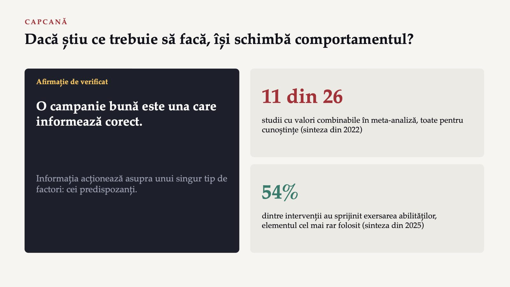
9 / 30Câștigul de cunoștințe este documentat; trecerea de la cunoștințe la comportament este mai rar măsurată. Principiul general: informația acționează asupra unui singur tip de factori, cei predispozanți. O intervenție care nu se ocupă și de factorii favorizanți, acces, cost, servicii, și de cei de întărire, familia, colegii, medicul, poate crește cunoștințele fără să schimbe comportamentul.
Implementarea și trei niveluri de evaluare
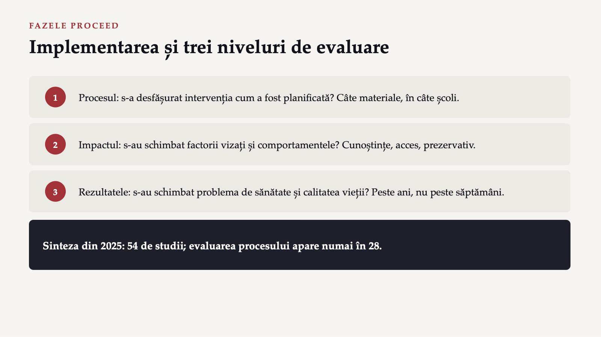
10 / 30Partea PROCEED pune intervenția în practică și o evaluează, pe trei niveluri: procesul, impactul și rezultatele. Sinteza din 2025, asupra a 54 de studii, a găsit că evaluarea procesului apare numai în 28. Și în literatura științifică, evaluarea care arată dacă programul a ajuns la oamenii cărora le era destinat lipsește din aproape jumătate dintre studii.
Fiecare material lucrează asupra altui factor
![RĂSPUNSUL LA VOTUL 1 Fiecare material lucrează asupra altui factor A Infograficul YRBSS informează și poate schimba percepția riscului: factor predispozant. B Pliantul și afișul despre abstinență exersează abilitatea de a refuza (favorizant); „3 din 4” țintește norma percepută (predispozant). C Broșura cu mituri corectează convingeri greșite: factor predispozant. D Broșura pentru părinți schimbă mediul de întărire, prin adultul cel mai apropiat. Toate patru sunt apărabile. Fără evaluarea impactului, „cel mai eficient” rămâne o opinie.](diapozitive/LP06/011.jpg) 11 / 30
11 / 30Primul vot a cerut o judecată pe care, cu informațiile de pe pagină, nimeni din sală nu o poate verifica. Fiecare material lucrează asupra altui factor și asupra altui public. Broșura pentru părinți este singurul material care încearcă să schimbe mediul de întărire al adolescentului, prin adultul cel mai apropiat de el. Toate cele patru variante sunt apărabile. Ce nu se poate apăra este o certitudine: fără evaluarea impactului, alegerea materialului cel mai eficient rămâne o opinie.
Grila de analiză a unei campanii
![FIȘA DE LUCRU 6 · PASUL 1 MICROSOFT FORMS · 8 MINUTE Grila de analiză a unei campanii Socială Ce rezultat social vrea să schimbe? Epidemiologică Ce problemă, cât de frecventă, la cine? Comportamentală și de mediu Ce comportamente și condiții? Educațională și ecologică Ce factori? Administrativă și de politici Ce resurse, canale, reguli? Procesul Cum s-ar ști că a ajuns la public? Impactul Cum s-ar ști că s-au schimbat factorii? Rezultatele Cum s-ar ști că s-a schimbat problema? Pasul 1: primele două rânduri, cu locul exact din document.](diapozitive/LP06/012.jpg) 12 / 30
12 / 30Grila de analiză a unei campanii după modelul PRECEDE-PROCEED este un șablon de completat; aceeași grilă se folosește pentru ambele campanii din această lucrare. Primul pas al fișei de lucru: completați primele două rânduri ale grilei pentru campania INSP, evaluarea socială și cea epidemiologică, și scrieți pentru fiecare locul exact din document.
Un diagnostic implicit, în alegerile ei
![ACTUL 2 · DIAGNOSTICUL PE CARE CAMPANIA ÎL PRESUPUNE Un diagnostic implicit, în alegerile ei 1 Social: abandonul școlar, șansele reduse de angajare, dependența financiară, stigmatizarea. 2 Epidemiologic: nașterile la mame sub 20 de ani din 2025, sifilisul din 2024, gonoreea, Chlamydia. 3 Comportamental: începutul vieții sexuale, prezervativul, partenerii, alcoolul sau drogurile. 4 De mediu: numai ca listă, în infograficul despre sarcină: sărăcia, accesul scăzut la servicii. Dacă un material insistă pe mituri, autorii au presupus convingeri greșite.](diapozitive/LP06/013.jpg) 13 / 30
13 / 30O campanie publicată fără analiza de situație nu este o campanie fără diagnostic: diagnosticul există implicit, în alegerile ei. Dacă un material insistă asupra miturilor despre contracepție, autorii au presupus că adolescenții au convingeri greșite despre contracepție. Diagnosticul social apare în infograficul despre sarcina la adolescente, iar cel epidemiologic este partea cea mai bine documentată a paginii. Diagnosticul de mediu apare numai ca listă.
În ce fază a modelului PRECEDE intră această informație?
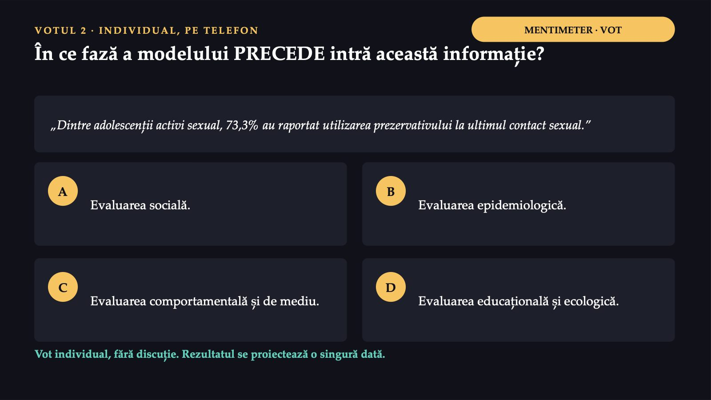
14 / 30Al doilea vot. Pagina campaniei spune: „Dintre adolescenții activi sexual, 73,3% au raportat utilizarea prezervativului la ultimul contact sexual”. În ce fază a modelului PRECEDE intră această informație? Rezultatul se proiectează o singură dată.
Faza se stabilește după ce descrie cifra
 15 / 30
15 / 30Cifra descrie un comportament: ce au făcut adolescenții la ultimul contact sexual. Locul ei este evaluarea comportamentală și de mediu, varianta C. Confuzia cea mai frecventă este cu varianta B: cifra vine dintr-un studiu epidemiologic, deci pare epidemiologică. Faza nu se stabilește însă după metoda prin care a fost obținută cifra, ci după ce descrie ea.
Ce presupun materialele despre factori
![ACTUL 2 · FACTORII DIN MATERIALE Ce presupun materialele despre factori P Miturile despre contracepție: convingeri pe care broșura încearcă să le corecteze. F Replicile exersate din pliant și afiș: abilități oferite de campanie. F Accesul scăzut la planificare familială: factor favorizant absent. Gratuitatea vaccinului HPV: favorizant. Î Sprijinul parental, cerut de infografic și dezvoltat în broșura pentru părinți. Î Presiunea socială din afișul despre abstinență: întărire cu semn negativ. Acoperă toate cele trei grupe, dar inegal: cele mai multe materiale lucrează asupra factorilor predispozanți.](diapozitive/LP06/016.jpg) 16 / 30
16 / 30Faza educațională nu este scrisă nicăieri pe pagină, dar materialele o trădează. Miturile despre contracepție sunt factori predispozanți. Replicile exersate din pliantul și afișul despre abstinență sunt abilități pe care campania le oferă, deci factori favorizanți. Sprijinul parental este un factor de întărire, iar presiunea socială, un factor de întărire cu semn negativ. Campania acoperă toate cele trei grupe de factori, dar le distribuie inegal; un singur material se adresează explicit celor care întăresc comportamentul, părinții.
Materialele nu spun același lucru despre aceiași adolescenți
![COMPLICAȚIA Materialele nu spun același lucru despre aceiași adolescenți Tema · Pagina campaniei · Infograficul de pe pagină Nașteri la adolescente · Pagina: 9,1% în 2025, sub 20 de ani, sursa INS · Infograficul: „1 din 9” în 2023, sub 19 ani, fără sursă Patru sau mai mulți parteneri · Pagina: 34% la băieți, 8,4% la fete · Infograficul: 34,0% la toți liceenii activi sexual Parteneri ocazionali · Pagina: 50,8% la băieți, 22,1% la fete, în 12 luni · Infograficul: 20,8%, de-a lungul vieții Se confirmă: „3 din 4” cu 73,4% (restul de la 26,6%); 76,4% și 23,6% însumează 100%. Fără o valoare de pornire clară, evaluarea impactului nu are cu ce compara.](diapozitive/LP06/017.jpg) 17 / 30
17 / 30Citite unul lângă altul, materialele campaniei nu dau aceleași cifre despre aceiași adolescenți. Pagina spune că în 2025, 9,1% dintre copiii născuți vii au avut mame sub 20 de ani; infograficul spune, pentru 2023, că „1 din 9”, fără să numească sursa. Același 34 descrie, în două materiale, două populații diferite. Nu e treaba noastră să decidem care cifră e corectă. Pentru planificator, lecția este alta: dacă diagnosticul epidemiologic și comportamental există în două variante, evaluarea impactului nu are cu ce compara. Există și cifre care se confirmă reciproc: dacă 26,6% au declarat cel puțin un raport sexual, restul este 73,4%, adică aproximativ trei sferturi.
Factorii și o nepotrivire între materiale
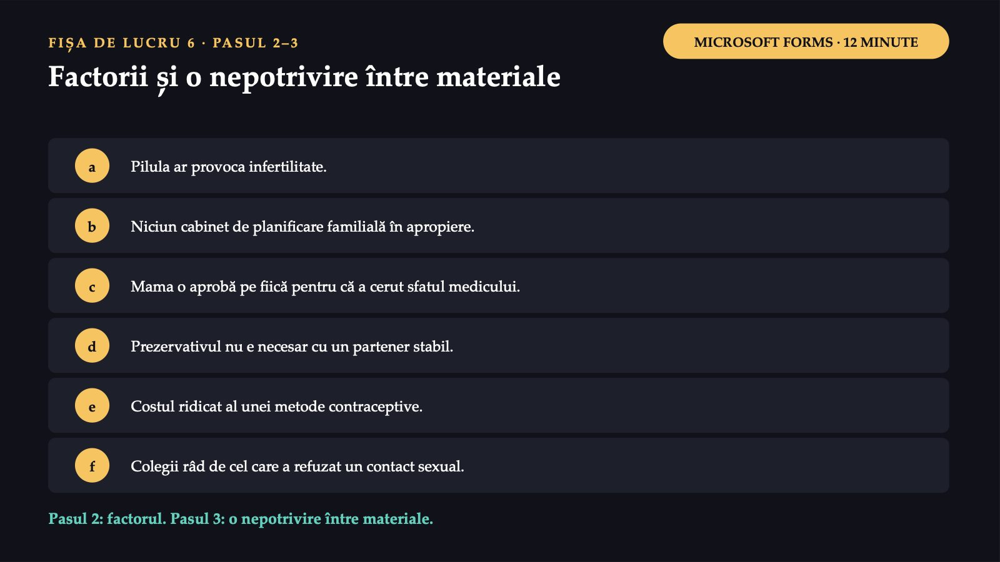
18 / 30Al doilea și al treilea pas al fișei de lucru: clasificați fiecare element ca factor predispozant, favorizant sau de întărire; apoi găsiți o nepotrivire între două materiale ale campaniei, cifra, anul, populația sau perioada, și scrieți ce informație ar fi lămurit-o.
Cu ce resurse și pe ce canale?
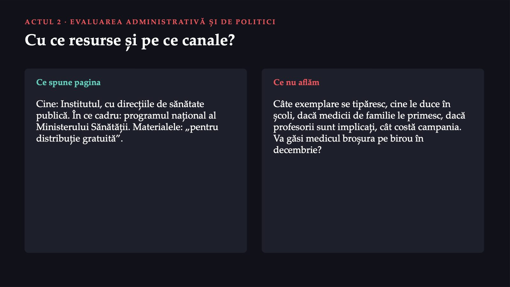
19 / 30Ultima fază PRECEDE întreabă cu ce resurse și pe ce canale se face intervenția. Pagina spune cine o face, Institutul cu direcțiile de sănătate publică, și în ce cadru, programul național al Ministerului Sănătății; materialele poartă mențiunea „pentru distribuție gratuită”. Nu aflăm de pe pagină câte exemplare se tipăresc, cine le duce în școli, dacă medicii de familie le primesc, nici cât costă campania. Pentru un medic de familie, întrebarea practică este simplă: va găsi broșura despre contracepție pe biroul lui în decembrie? Pagina nu răspunde.
Indicatori pentru trei niveluri PROCEED
![ACTUL 3 · EVALUAREA CARE LIPSEȘTE Indicatori pentru trei niveluri PROCEED 1 Proces: liceele cu materiale distribuite, din totalul liceelor județului. 2 Impact asupra factorilor: elevii care numesc o metodă eficientă și un loc de consiliere, în noiembrie și în ianuarie. 3 Impact asupra comportamentului: prezervativul la ultimul contact sexual, cu valoare de pornire publicată. 4 Rezultate: născuții vii din mame sub 20 de ani, din statisticile INS, cu un an întârziere. Propuneri didactice ale atelierului, nu indicatori anunțați de Institut.](diapozitive/LP06/020.jpg) 20 / 30
20 / 30O evaluare se proiectează înaintea intervenției, nu după ea, pentru că are nevoie de o valoare de pornire. Un indicator bun are cinci elemente: ce se numără, din ce total, din ce sursă, când se măsoară și cu ce se compară. Indicatorii de proces nu spun nimic despre efect; spun dacă efectul era măcar posibil. Indicatorul de rezultat este cel mai important și cel mai puțin potrivit pentru a judeca o campanie de două luni: se schimbă lent, are multe cauze și apare cu o întârziere de un an.
Care indicator ar putea arăta, în ianuarie 2027, o schimbare la adolescenți?
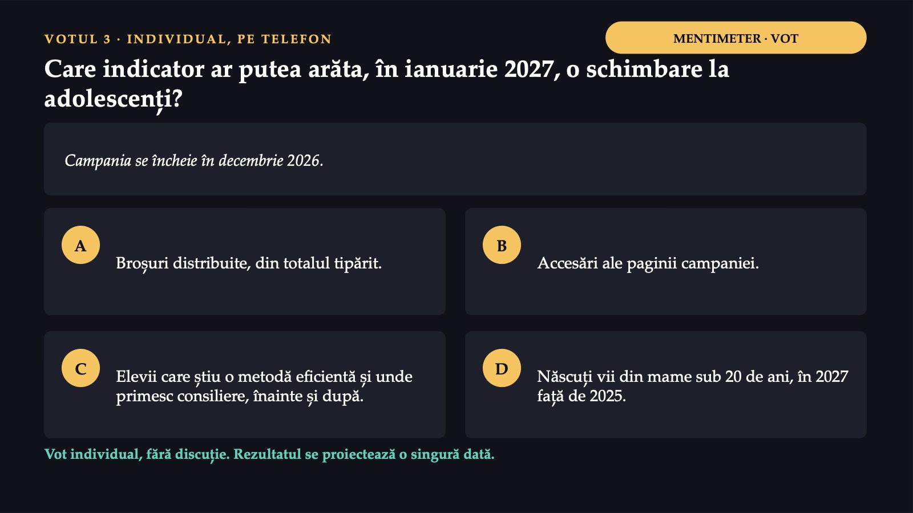
21 / 30Al treilea vot. Campania se încheie în decembrie 2026. Care dintre acești indicatori ar putea arăta, în ianuarie 2027, o schimbare la adolescenți, nu doar că intervenția s-a desfășurat? Rezultatul se proiectează o singură dată.
Singurul indicator de impact din listă
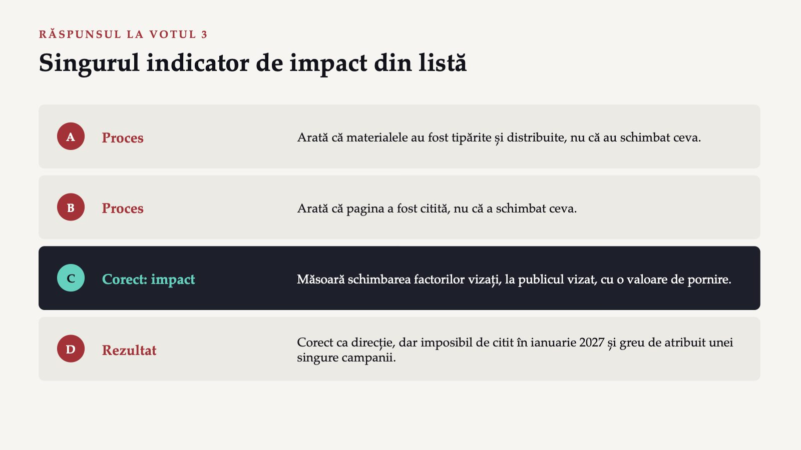
22 / 30Varianta C este singurul indicator de impact din listă: măsoară schimbarea factorilor vizați de materiale, cunoștințele și accesul, la publicul vizat, cu o valoare de pornire. Variantele A și B sunt indicatori de proces: arată că materialele au fost tipărite și citite, nu că au schimbat ceva. Varianta D este un indicator de rezultat, corect ca direcție, dar imposibil de citit în ianuarie 2027. Dacă indicatorul C s-ar măsura separat pentru elevii care au primit fiecare tip de material, s-ar putea răspunde, cu date, la întrebarea la care sala a răspuns la început cu opinii.
Pasul 4: proiectați evaluarea
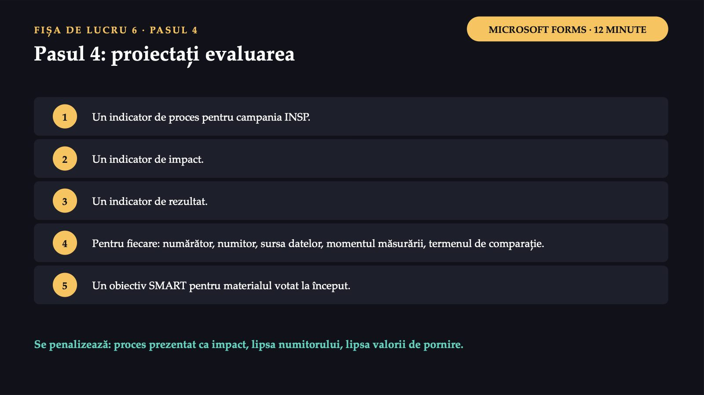
23 / 30Al patrulea pas al fișei de lucru: construiți pentru campania INSP câte un indicator de proces, de impact și de rezultat, fiecare cu numărătorul, numitorul, sursa datelor, momentul măsurării și termenul de comparație; scrieți apoi un obiectiv SMART pentru materialul pe care l-ați votat la început.
Campania Santé publique France
![ACTUL 3 · ALTĂ CAMPANIE, ACEEAȘI GRILĂ Campania Santé publique France 1 Difuzată din nou 21 mai – 9 iunie 2024, în săptămâna națională a sănătății sexuale. Patru clipuri: infecții, consimțământ, contracepție, tulburări sexuale. 2 Forma Oameni obișnuiți își rostesc cu voce tare întrebarea, în situații obișnuite de viață, dar neașteptate. 3 Publicul Situl QuestionSexualite.fr, pentru adulți; pentru adolescenți, un alt sit, OnSEXprime.fr. Sloganul: „Tout le monde se pose des questions sur la sexualité…”.](diapozitive/LP06/024.jpg) 24 / 30
24 / 30Agenția franceză de sănătate publică, Santé publique France, a difuzat din nou între 21 mai și 9 iunie 2024 o campanie digitală cu patru clipuri scurte, despre infecțiile cu transmitere sexuală, consimțământ, contracepție și tulburările sexuale, în care personaje obișnuite își rostesc cu voce tare, în situații obișnuite de viață, dar neașteptate, întrebarea pe care și-o pun în gând. Situl este destinat populației adulte; pentru adolescenți, agenția are un alt sit, OnSEXprime.fr.
Campania franceză, citită cu grila PRECEDE-PROCEED
![ACTUL 3 · ACEEAȘI GRILĂ Campania franceză, citită cu grila PRECEDE-PROCEED 1 Diagnosticul epidemiologic: prezent, cu date din ani diferiți, unele vechi de peste un deceniu. 2 Scopul educațional, declarat: „să normalizeze întrebările legate de sexualitate”. 3 Factorul vizat, dedus din scop: jena de a întreba, deci o atitudine, un factor predispozant. 4 Factorul favorizant oferit: situl, cu chestionar, tabel comparativ al metodelor și hartă a centrelor. 5 Plan de evaluare sau rezultate publicate: nu. Cuvântul „jenă” nu apare pe pagină; este deducția noastră.](diapozitive/LP06/025.jpg) 25 / 30
25 / 30Citită cu grila din secțiunea 2, campania franceză arată un alt profil decât cea românească. Scopul educațional este declarat și determină forma campaniei: pagina spune că spiritul campaniei este ușor și că ea vrea să normalizeze întrebările legate de sexualitate. Factorul vizat nu este numit pe pagină; îl deducem din scop: dacă întrebările trebuie normalizate, autorii presupun că oamenilor le este jenă să le pună. Nici această pagină nu publică un plan de evaluare sau rezultatele unei evaluări.
Pe ce factor din modelul PRECEDE mizează această alegere?
![VOTUL 4 · INDIVIDUAL, PE TELEFON MENTIMETER · VOT Pe ce factor din modelul PRECEDE mizează această alegere? Clipurile arată oameni obișnuiți care își rostesc cu voce tare întrebările despre sexualitate, în situații obișnuite de viață, pe un ton ușor. A Un factor favorizant: accesul la servicii de testare. B Un factor predispozant: jena de a pune întrebări despre sexualitate. C Un factor de întărire: aprobarea părinților. D Un factor administrativ: bugetul redus al campaniei. Vot individual, fără discuție. Rezultatul se proiectează o singură dată.](diapozitive/LP06/026.jpg) 26 / 30
26 / 30Al patrulea vot, transferul. Clipurile franceze arată oameni obișnuiți care își rostesc cu voce tare întrebările despre sexualitate, în situații obișnuite de viață, pe un ton ușor. Pe ce factor din modelul PRECEDE mizează această alegere? Rezultatul se proiectează o singură dată.
Varianta B: factorul predispozant
 27 / 30
27 / 30Varianta B: pagina spune explicit că scopul campaniei este să normalizeze întrebările legate de sexualitate, iar mijlocul este tonul ușor. Jena este o atitudine, deci un factor predispozant. Accesul la testare este într-adevăr oferit, dar de sit, nu de clipuri. Comparația celor două campanii are trei concluzii: ambele au un diagnostic epidemiologic, dar nici una nu publică planul de evaluare; campania franceză își declară scopul educațional și construiește forma în jurul lui; campania franceză separă publicul adult de cel adolescent prin situri diferite. Niciuna dintre aceste concluzii nu spune care campanie a schimbat mai mult comportamentul.
Cinci idei ale lucrării
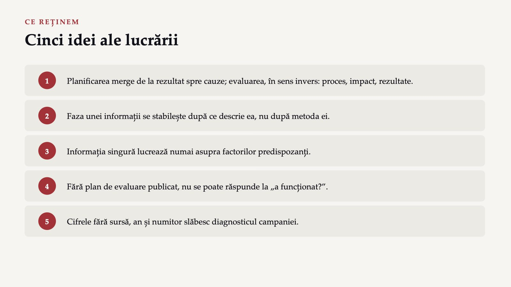
28 / 30Modelul PRECEDE-PROCEED planifică de la rezultat spre cauze și evaluează în sens invers. Faza unei informații se stabilește după ce descrie ea, nu după metoda prin care a fost obținută. O campanie fără plan de evaluare publicat nu poate răspunde la întrebarea dacă a funcționat; evaluarea se proiectează înaintea intervenției, pentru că are nevoie de o valoare de pornire.
Ce înseamnă pentru voi
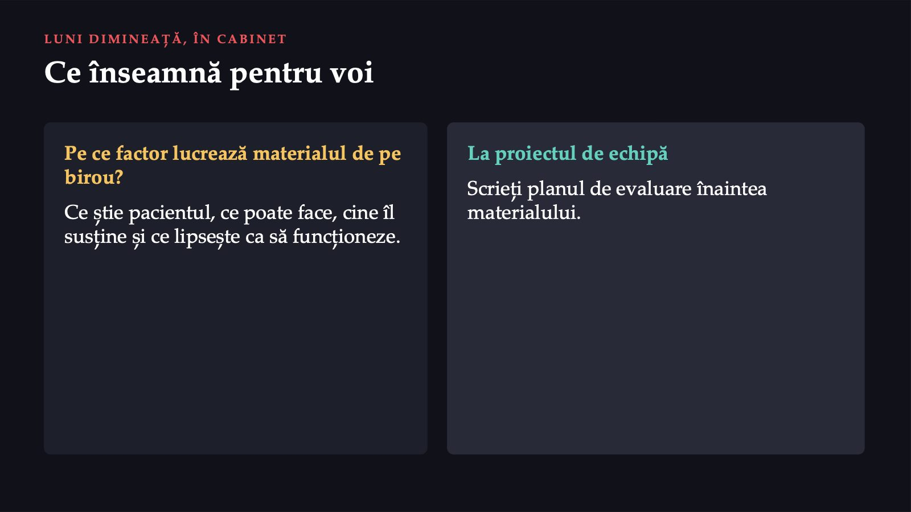
29 / 30Luni dimineață, în cabinet: când pe biroul vostru ajunge un material de campanie, întrebați-vă pe ce factor lucrează, ce știe pacientul, ce poate face, cine îl susține, și ce lipsește ca să funcționeze la pacienții voștri. Când elaborați proiectul de echipă, scrieți planul de evaluare înaintea materialului.
Trei întrebări pentru final
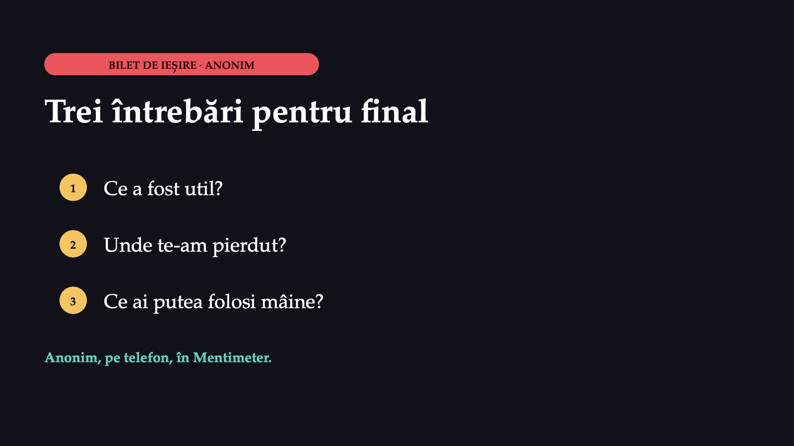
30 / 30Cele trei întrebări de final, anonime: ce a fost util, unde te-am pierdut, ce ai putea folosi mâine.
Săgeți sau spațiu: navigare · O: vedere de ansamblu · N: notele prezentatorului · F: ecran complet · Esc: închidere